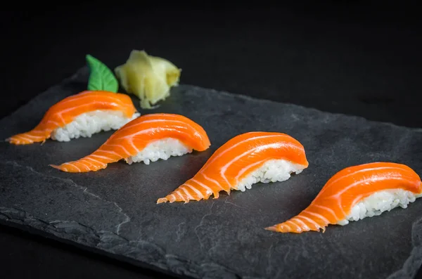
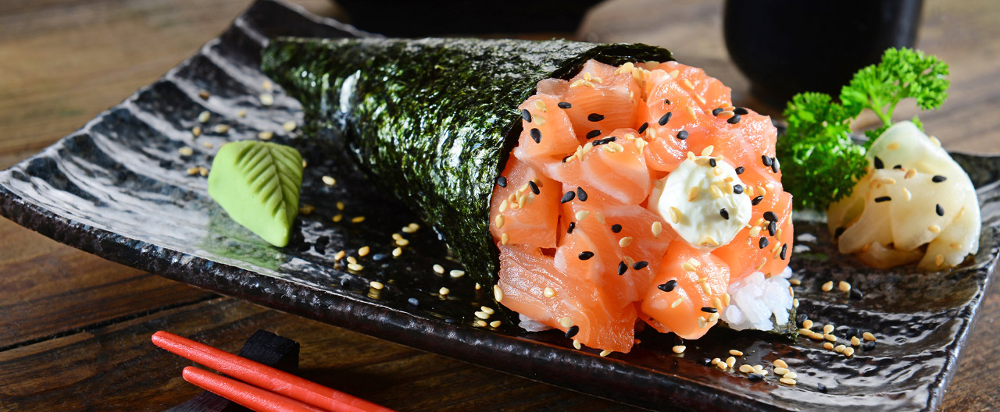
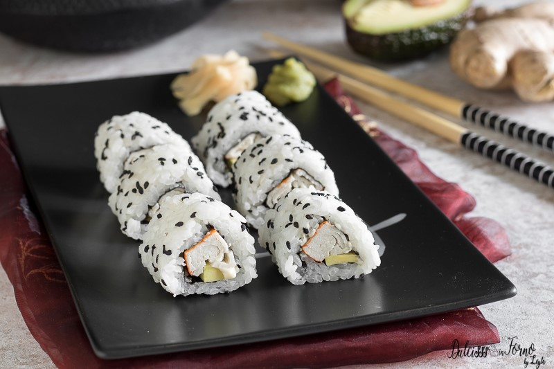
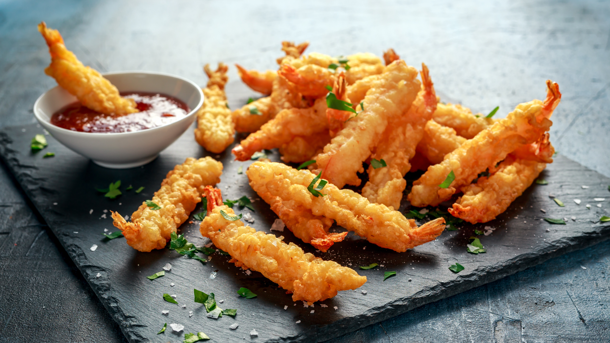

CARDÁPIO

Niguiri de Salmão
Uma fatia de salmão fresco sobre um bolinho de arroz temperado.

Temaki de Salmão
Cones de alga recheados com arroz e salmão fresco, acompanhados de cebolinha e gergelim.

Uramaki Califórnia
Arroz por fora com recheio de kani, pepino, manga e cream cheese, enrolado em alga.

Sashimi de Salmão
Fatias finas de salmão cru, servidas com molho de soja e wasabi.

Yakisoba
Macarrão salteado com vegetais e carne, coberto com molho oriental.

Sushi Dragon Roll
Enrolado de sushi com camarão empanado, abacate e molho especial.

Tempurá de Camarão
Camarões empanados em uma massa crocante e levemente fritos.

Missoshiro
Sopa de missô tradicional japonesa, com tofu e cebolinha.

Hot Roll
Sushi empanado e frito, recheado com salmão e cream cheese.